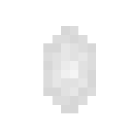
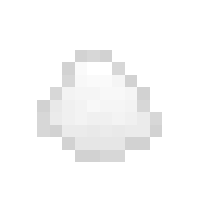
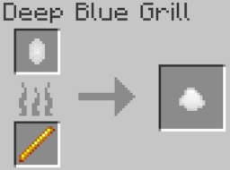
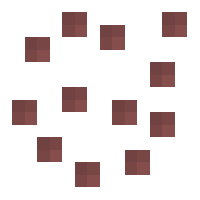

Sturgeon
Sturgeon are a river exclusive fish that spawns very rarely (epic rarity). It is an extremely tough fish, being able to
reduce damage taken by 60%. It also can drop it's scute, which can be processed to make the Armorbite, an item that gives
the player resistance for a certain amount of time when consumed.
Spawning
Sturgeon have and "epic" rarity, meaning that you should not expect to see it very often. The way sturgeons spawn naturally is by replacing some naturally spawning aquatic mob. In rivers, each salmon has a very small percent chance to be replaced with a sturgeon. The table below shows the spawn rates of the sturgeon in the biomes they spawn in.
| Biome | Spawn Chance (Replacement Chance) | Group Size |
|---|---|---|
| River | 4% (Salmon) | 1 |
Items
Item drop chances
Sturgeon have 3 possible items it can drop upon death. Two items can only be dropped if a player kills the sturgeon, that being sturgeon eggs and the sturgeon scute. The other item it can drop is bone meal. When the sturgeon dies, it can drop 1 - 3 items in total, each item can be defined by something called a "roll", so there are a minimum of 1 roll, and a maximum roll of 3. Below shows a table of the item drop chances:
| Item | Chance (if killed by player) | Chance (if not killed by player) | Count (per roll) |
|---|---|---|---|
| Sturgeon Scute | 13.63% | 0% | 1 |
| Sturgeon Eggs (Item) | 13.63% | 0% | 1 |
| Bonemeal | 72.73% | 100% | 1 |
Sturgeon Scute

Sturgeon scute is exclusively dropped by sturgeons when killed by a player. The scute is a very rare useful item because the scute can be processed to make the Armorbite using the Deep Blue Grill. However, by itself it doesn't serve any other purpose.
Armorbite

The Armorbite can be obtained when a player cooks Sturgeon Scute using the Deep Blue Grill. However, the only fuel source that can be used is a blaze rod. Once you cook the sturgeon scute, the blaze rod will still be preserved.

Upon obtaining the Armorbite, the player can eat it to receive the Resistance I effect for 3 minutes. That is all the player will receive, the Armorbite does not give any nutrition or saturation effects. The Armorbite is stackable up to 64 in one slot.
Behavior
Sturgeon are passive mobs, meaning they do not attack the player. They are ambient fish that swim around midwater in the various rivers. They are extremely tough, being able to reduce the amount of damage they receive from most sources of damage by 60%. Because of their size they can't be transported via water buckets. Instead, the player must kill a sturgeon and hope it drops sturgeon eggs and use that item to raise sturgeon into adulthood. More information about doing this is found in the next section.
Life Cycles and Raising Sturgeon
Sturgeon Eggs
Sturgeon Eggs (Item)

In order for the player to be able to raise sturgeon, they cannot use a water bucket due to their size. Instead, the player must kill an adult sturgeon for a chance to get an item called Sturgeon Eggs. The player can place these eggs and wait for them to grow,preferably in some body of water, or else the eggs will die immediately.
Sturgeon Eggs (Entity)
Sturgeon eggs are the first phase of a sturgeon's lifecycle. Like with every other baby/juvenile variants of the Blue Depths mobs, they do not spawn naturally, they can only exist if a player (or blocks like dispensers or droppers) places a Sturgeon Eggs Item. These eggs have the potential to grow up and become a Juvenile Sturgeon, the next phase in the life cycle of a sturgeon. They look like a bunch of little dark cubes huddled together. They will never despawn unless they are either killed by the player or are removed from a source of water.
Unlike most other life-cycle mobs/entities from Blue Depths, Sturgeon Eggs can only grow into Juvenile Sturgeon through the passage of time. There are no items that can be thrown at the eggs to speed up their growth process. The eggs will take 1:40 minutes to grow into a juvenile sturgeon. However, there is a 20% chance that the eggs could spawn two juvenile sturgeons.
If the player wishes to stunt the growth of the eggs, meaning they want to prevent the eggs from ever hatching, all the player has to do is drop coal near the eggs. This effect is irreversible.
Below shows a table on how each method accelerates the growth of the Sturgeon Eggs:
| Method | Growth Progress | Amount Required for Near-Instant Growth |
|---|---|---|
| Natural Growth (Doing nothing) | Growth progresses normally | Not applicable |
| Coal | Stops growth (irreversible) | Not applicable |
Sturgeon Eggs do not drop anything upon death.
Juvenile Sturgeon
Juvenile sturgeon is the second phase in a tuna's lifecycle. Like the Sturgeon Eggs, juvenile sturgeon do not spawn naturally, they can only be obtained when a sturgeon eggs hatch/grow up. Juvenile sturgeon looks just like adult sturgeon, except they appear smaller. These fish have to potential to grow into mature sturgeon by simply waiting or giving it food to accelerate its growth. Juvenile sturgeon do not despawn like wild adult sturgeon do.
For a juvenile sturgeon to grow up to become an adult, the player has two options. The player can either wait a certain amount of time for the juvenile to grow all by itself, or they can feed it cod or spider eyes to speed up the growth process, by taking a certain amount of time out of the remaining time left to grow. Unlike with vanilla mobs, Blue Depth mobs will not eat if you "use" an item on them, instead you must throw/drop the item close to them. The total time it takes for it to grow is 40 minutes of real time, a long wait time that is supposed to mimick how real life sturgeon take a really long time to mature. Due to this long wait, it is recommended to just feed the sturgeon food to accelerate its growth.
If the player wishes to stunt the growth of the juvenile sturgeon, meaning they want to prevent the juvenile from ever growing, all the player has to do is drop beetroot near the juvenile. This effect is irreversible.
Below shows a table on how each method accelerates the growth of the juvenile:
| Method | Growth Progress | Amount Required for Near-Instant Growth |
|---|---|---|
| Natural Growth (Doing nothing) | Growth progresses normally | Not applicable |
| Cod (Item) | Removes 50 seconds from remaining time | 48 cod |
| Spider Eye (Item) | Removes 120 seconds from remaining time | 20 Spider eyes |
| Beetroot | Stops growth (irreversible) | Not applicable |
Juvenile Sturgeon do not drop anything upon death.
History
Development History
| Datapack Version | Addition/Change |
|---|---|
| 1.0.0 (Initial Release) |
|
| 1.1.0 (Roaring Rivers Part 1: Below the Surface) | Fixed a bug where sturgeon would sometimes swim in directions it wasn't facing. |
Gallery